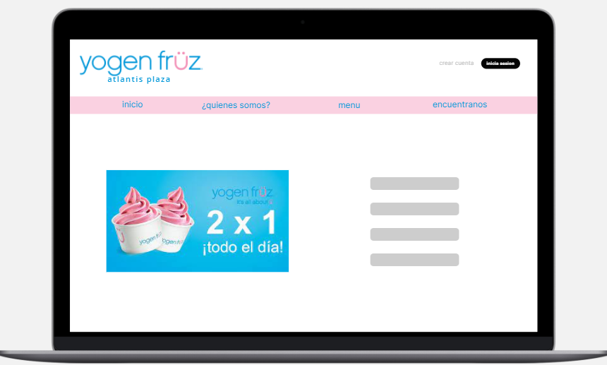
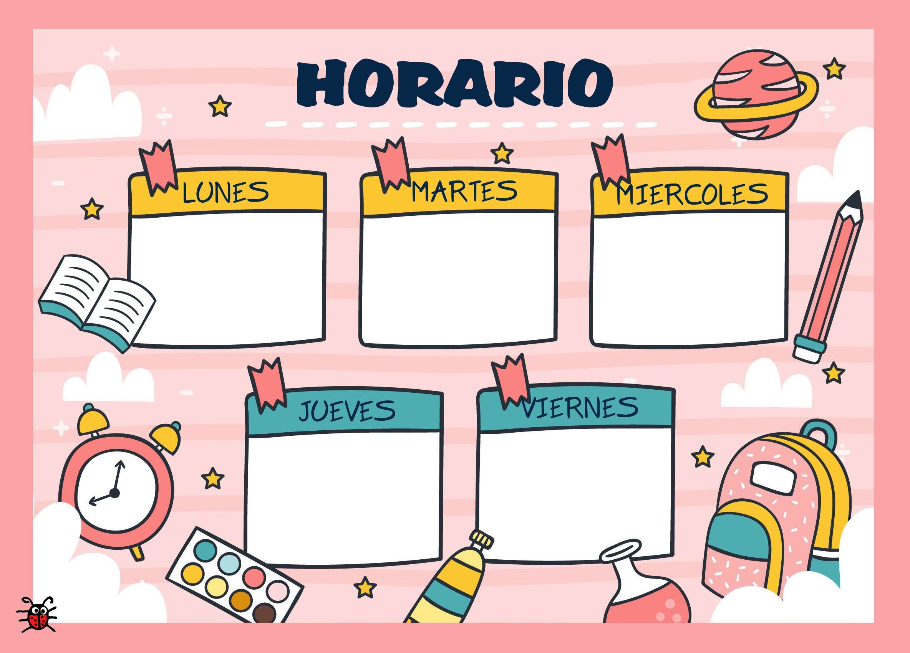

|
Integrantes
María Paula Gaviria, María Fernanda Rodríguez Conde, Nelson Santiago guayazan palacios, Rafael Enrique Cabrera Jimenez.
Presentación del problema
Yogen Früz es una franquicia canadiense que ofrece una gran variedad de yogures que pueden ser acompañados con distintos toppings, especialmente, frutas. Esta variedad de opciones saludables ha tomado mucha popularidad alrededor del mundo, y Colombia no es la excepción. En la actualidad, la franquicia tiene presencia en muchas ciudades de Colombia, y solo en Bogotá hay 4 tiendas. A pesar de todo esto, esta empresa no cuenta con una página web oficial para Colombia, y actualmente utilizan un linktree que redirecciona a distintas páginas de domicilios o a Whatsapp.
Otro problema que presenta la compañía es que en ciertos horarios, los locales tienen una afluencia muy grande de personas, y se generan largas filas, que en muchos casos, redireccionan a los potenciales clientes a comprar en otros lugares. Finalmente, la parte corporativa de la empresa necesita más información sobre horarios de consumo y horas pico para optimizar su operación.
Nuestra solución
Nuestra solución es crear una plataforma que permita a los clientes conocer más sobre los productos que ofrece Yogen Früz en Colombia. Esta información incluye tanto datos nutricionales, como fotos y precios de los productos. Además, queremos que los clientes se registren y puedan hacer sus pedidos para recoger en tienda. Finalmente, la plataforma tendrá una sección para que los administradores puedan revisar sus estadísticas y otros datos relevantes. Para esto, tenemos los siguientes objetivos:

Objetivos principales
-
Crear un portal web donde los clientes puedan conocer toda la variedad de productos que se maneja, los beneficios nutricionales de sus productos de interés y los precios de las distintas combinaciones (yogurt y toppings).
-
Un registro de los clientes, y que a su vez, estos puedan añadir productos al “carrito”, pagarlos y recogerlos en la tienda sin hacer filas.
-
Establecer una plataforma de análisis para el área administrativa donde puedan consultar estadísticas de consumo para una mejor planeación de inventarios y personal en tienda.
Metodologías a utilizar
La metodología escogida para llevar a cabo el proyecto es la Scrum por varias razones. La primera es la organización que trae en intervalos de tiempo y tareas específicas a realizar, esto permitirá una división del trabajo más eficiente y resultados en las fechas esperadas. Por otro lado, esta metodología potencia nuestra responsabilidad con el trabajo, debido al seguimiento que se puede hacer por parte de cada miembro del grupo. Y finalmente, Scrum puede adaptarse muy bien a la fechas de entregas del proyecto a través de los sprints, que permitiran hacer el trabajo de calidad en tiempo adecuados.

Para realizar el trabajo simultaneo utilizaremos el siguiente repositorio de github:
Click aquí.